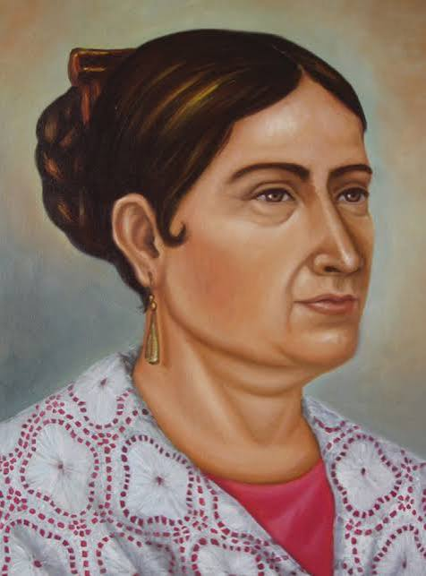

Biografías Ilustres
Miguel Hidalgo y Costilla

Padre de la Patria (1753 - 1811)
Conocido como el Padre de la Patria, fue un cura, teólogo y militar criollo que inició la Guerra de Independencia de México.
- Iniciador de la Independencia: La madrugada del 16 de septiembre de 1810, hizo sonar las campanas de su parroquia en Dolores, Guanajuato (el Grito de Dolores), para convocar al pueblo a levantarse en armas contra el gobierno virreinal español.
- Líder insurgente: Encabezó la primera etapa de la lucha armada al frente de un ejército popular compuesto por campesinos, indígenas y mineros. Decretó la abolición de la esclavitud y la eliminación de los tributos a las castas.
- Su trágico final: Tras sufrir varias derrotas militares, fue capturado en Coahuila en marzo de 1811. Fue juzgado, excomulgado de la Iglesia católica y fusilado el 30 de julio de 1811 en Chihuahua.
José María Morelos y Pavón

Conocido como el "Siervo de la Nación", fue un sacerdote, militar y político novohispano que asumió el liderazgo de la Guerra de Independencia de México tras la muerte de Miguel Hidalgo.
- Líder de la etapa de organización (1811-1815): Tras ser encomendado por Miguel Hidalgo para tomar el puerto de Acapulco y tomar las armas en el sur, organizó un ejército disciplinado que dominó gran parte del centro y sur del país.
- Redactor de los Sentimientos de la Nación (1813): Convocó al Congreso de Chilpancingo y presentó este célebre documento que planteaba la independencia absoluta de España, la abolición de la esclavitud, la eliminación de las castas y la división de poderes.
- Primera Constitución: Impulsó la Constitución de Apatzingán (1814), considerada la primera carta magna del movimiento independentista mexicano.
- Captura y muerte: Fue capturado por las tropas realistas en noviembre de 1815 y fusilado el 22 de diciembre de 1815 en San Cristóbal Ecatepec.
Josefa Ortiz de Domínguez

La Corregidora de Querétaro (1768 - 1829)
Conocida como La Corregidora, fue una de las principales organizadoras de la Independencia de México y una figura fundamental para que la lucha armada pudiera iniciar.
- La Conspiración: Casada con el corregidor de Querétaro, organizó en su casa las reuniones secretas donde Miguel Hidalgo e Ignacio Allende planeaban la independencia.
- El aviso decisivo: En septiembre de 1810, al ser descubiertos, su esposo la encerró para protegerla. Ella se las arregló para enviar un mensaje secreto alertando a Hidalgo, lo que obligó a adelantar el inicio de la guerra a la madrugada del 16 de septiembre.
- Prisión y lealtad: Fue encarcelada tres años por traición a la Corona española, pero nunca delató a ningún insurgente ni aceptó recompensas tras lograrse la independencia.
Vicente Guerrero

Consumador de la Independencia (1782 - 1831)
General que mantuvo viva la chispa de la resistencia insurgente en las montañas del sur y pactó la paz para lograr la consumación independentista.
- Resistencia insurgente: Tras la muerte de Morelos, mantuvo viva la lucha armada mediante la guerra de guerrillas en las montañas del sur del país.
- El Abrazo de Acatempan (1821): Se unió con Agustín de Iturbide para proclamar el Plan de Iguala y formar el Ejército Trigarante, logrando así la consumación de la Independencia.
- Frase célebre: Cuando su padre intentó convencerlo de rendirse a cambio de indultos y riquezas del virrey, él se negó pronunciando: «La patria es primero».
- Presidente de México (1829): Durante su mandato expidió el decreto formal para la abolición definitiva de la esclavitud en todo el país.